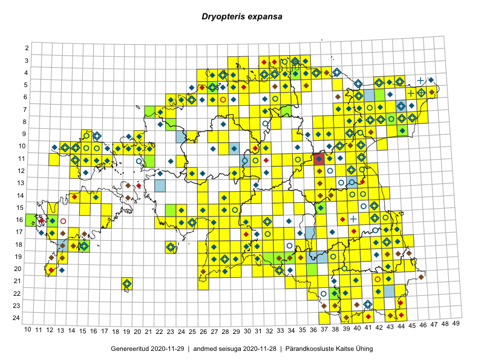

Dryopteris expansa
Uuendatud: 2016-12-02
Kaardile koondatud taksonid: Dryopteris expansa (C.Presl) Fraser-Jenk. & Jermy

Kaart põhineb 285 kirjel, neist vaatlusi 283 ja eksemplare 2. Taksonit on leitud 210 ruudust.
Kuvatud viited 20 esimesele andmebaasikirjele, ülejäänud PlutoFis
- Malle Leht: 2015-07-09: : ala
- Peedu Saar, Liina Oja: 2015-05-20: 18-27: ala
- Malle Leht: 2015-08-02: : ala
- Peedu Saar, Toomas Kukk: 2015-05-28: 10-15: ala
- Toomas Kukk, Eerik Leibak: 2015-08-09: 14-15: ala
- Toomas Kukk, Peedu Saar: 2014-09-25: 07-42: ala
- Toomas Kukk, Peedu Saar: 2014-09-12: 07-42: ala
- Toomas Kukk, Peedu Saar: 2014-09-24: 06-40: ala
- Toomas Kukk, Peedu Saar: 2014-09-24: 06-41: ala
- Rein Kalamees, Kersti Püssa: 2015-09-06: 03-32: ala
- Rein Kalamees, Kersti Püssa: 2015-08-04: 03-33: ala
- Tiit Hallikma, Toomas Kukk: 2015-07-21: 05-45: ala
- Rein Kalamees, Kersti Püssa: 2015-09-02: 03-36: ala
- Peedu Saar, Ott Luuk: 2015-06-21: 14-41: ala
- Peedu Saar, Ott Luuk: 2015-06-21: 14-42: ala
- Ott Luuk, Peedu Saar: 2015-07-27: 11-35: ala
- Peedu Saar: 2015-07-04: 18-45: ala
- Peedu Saar: 2015-07-04: 18-44: ala
- Peedu Saar: 2015-07-15: 15-39: ala
- Ott Luuk, Peedu Saar: 2015-08-13: 24-44: ala